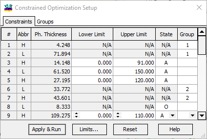
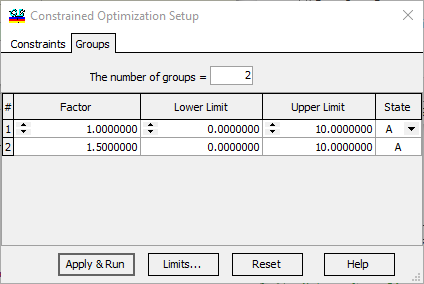

Constrained Optimization
Constrained Optimization
Navigation: OptiLayer Menu Commands > Synthesis Menu >
Constrained Optimization
` <inhomogeneities_interlayers_re.html>`__ ` <idh_menu_synthesis.html>`__ ` <formula_constrained_optimizati.html>`__
OptiLayer has a variety of options for constrained optimizations. These options are aimed at meeting various feasibility demands and providing better manufacturing properties for coating designs.

It is possible to set constraints for individual layer thicknesses. Each layer can have:
Active (A),
**Fixed (F) or **
Optical Fixed (O)
states, which indicate whether the thickness of this layer can vary during optimization. If the state is Optical Fixed, the physical thickness and refractive index vary but only so that their product, i.e., optical thickness, remains constant. Another type of constrained optimization is called Group optimization. In this mode, thicknesses of layers within each group specified by the user are kept proportional; they are controlled by a single factor, which is subject to optimization. To create a group of layers, use the Groups tab of the Constrained Optimization Setup window.

For each group of layers, it is possible to specify a starting value for the group factor and the corresponding constraints. The unit factor value corresponds to the initial thicknesses of layers in the group. Each group can have an Active or Fixed state. When a group is created, its number is available in the drop-down combo box in the Group column of the Constraints tab of the Constrained Optimization Setup window.
The Limits… button opens an additional Limits Generator dialog to invoke recalculation of upper and lower constraints for layer thicknesses (Th.Min and Th.Max columns).
The Reset button allows setting the default values for all data instantly.
The Apply & Run button will start computations without closing the Constrained Optimization Setup window. This is very convenient for repetitive experiments with slightly varying constraints. Please note that it is convenient to use the Column Editor for editing purposes. It is possible to apply column assignments to All layers, Odd or Even layers only, or layers of a specific material.

Note: Constrained optimization when a Stack loaded to memory is now possible. Layers of designs in a stack are numbered consecutively using two numbers: design number and the number of the layer in this design.